Рекламное агентство one RA
Ребрендинг рекламного агентства one RA, включающий обновление визуальной идентичности, развитие внутреннего бренда и создание масштабной системы коммуникации для внутренних и внешних носителей.
Проблемы текущего брендинга проявлялись во всех аспектах и требовали глубокого переосмысления корпоративной идентичности. Старый логотип являлся единственным элементом идентификации, не отражавшим ни характера, ни целей компании. Наличие двух неймингов и двух вариантов написания (1-ра и Первое национальное рекламное агентство) создавало путаницу, так как связь между ними была неочевидной.
Бренд не имел четко прослеживаемой истории и позиционирования, а лишь привязку к абстрактно красному цвету, что позволяло использовать различные оттенки и путать пользователей. Также отсутствовали правила использования графических инструментов и стилей внутри коммуникации.
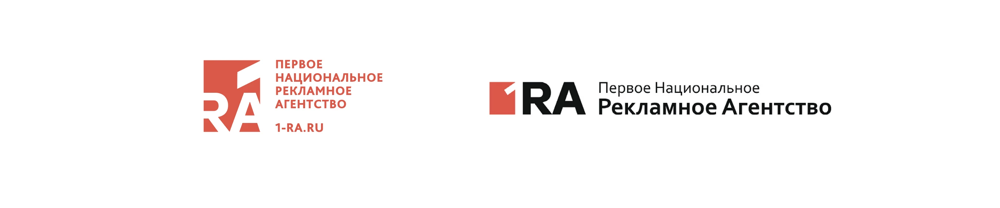
Динамичность, стремление к поставленным целям и гибкость переключения на задачи разного характера — всё это о рекламном агентстве one RA и о людях, которые в нём работают.
Главным вдохновением при поиске метафоры стали гонщики Nascar и нумерация их автомобилей. Эти спортсмены, как и сотрудники one RA, всегда сфокусированы, стремительны, быстро реагируют на любые изменения и целеустремленно идут к победе опережая своих оппонентов. Главный графический элемент идентификации был также взят с гоночных машин – это стремительная, активная и гибкая цифра «1» заключённая в круг, которая отражает на столько высокую динамику обгона, что оставляет за собой след. Фирменный знак живёт во всех проекциях, хотя изображён в плоскости. Он может двигаться в разные стороны, не теряя своей сути. Статичная единая форма используется в брендированных продуктах компании и является частью текстового формата. Чтобы добавить в брендинг гибкости и структурности в поддержку к динамике были выбраны стилистические направления швейцарского стиля, на основе которого был разработан стиль вёрстки и текстовое лого.
В первую очередь, была проведена работа над позиционированием для создания эффективной стартовой платформы бренда. Следующий пункт — глубокий анализ команды компании для выделения ключевых особенностей в коммуникации и их визуального подчеркивания. Далее осуществлен анализ рынка. Интересный факт: изучение не ограничивалось только рекламными агентствами, а охватывало весь мировой опыт, связанный с агентствами и сферой b2b, а также долгосрочные мировые тенденции в области брендинга, с целью отличия от прямых конкурентов. На основе этих данных, была разработана и утверждена бренд-стратегия и новый нейминг: one RA. В проект вложено значительное количество анализа, который позволил создать максимально живой и динамичный бренд с огромным запасом гибкости и масштабируемости под быстро меняющийся мир.
В коммуникациях мы сохранили и конкретизировали красный цвет, сделав его основой и контрастом, не исключая использования других цветов.
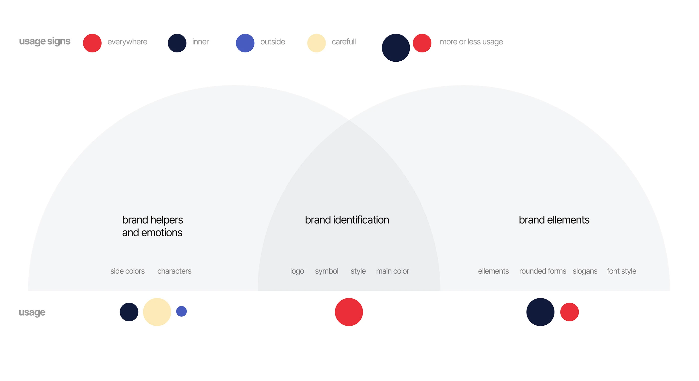
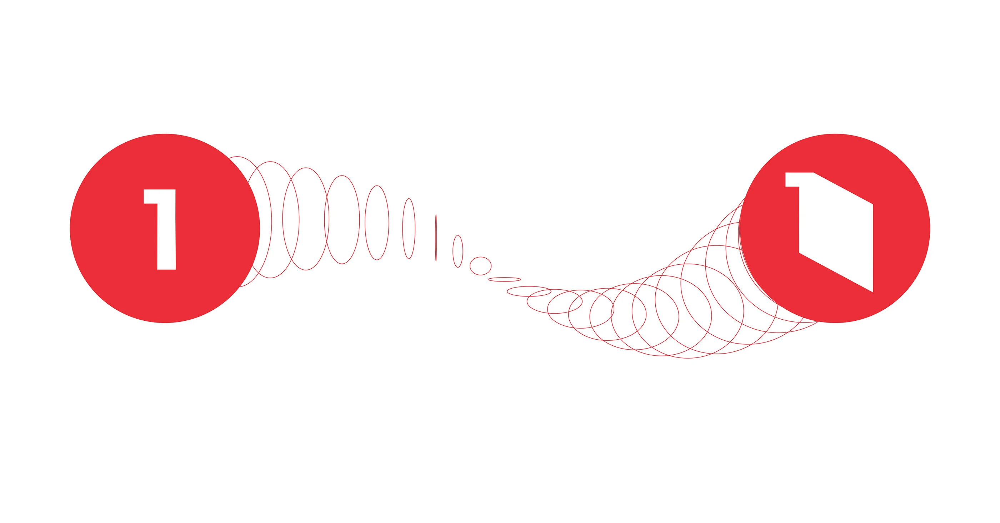
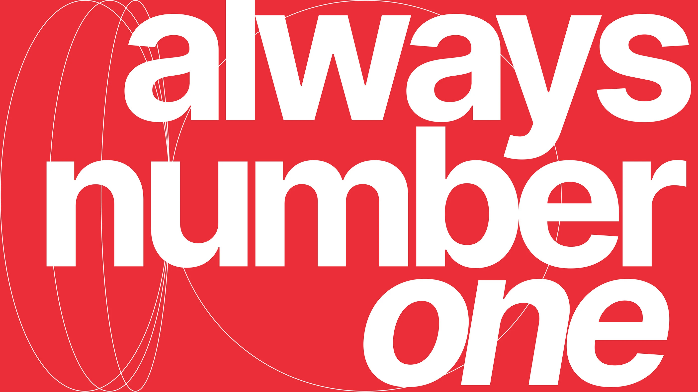
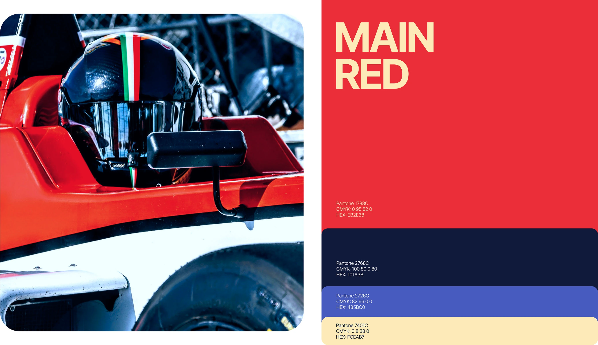
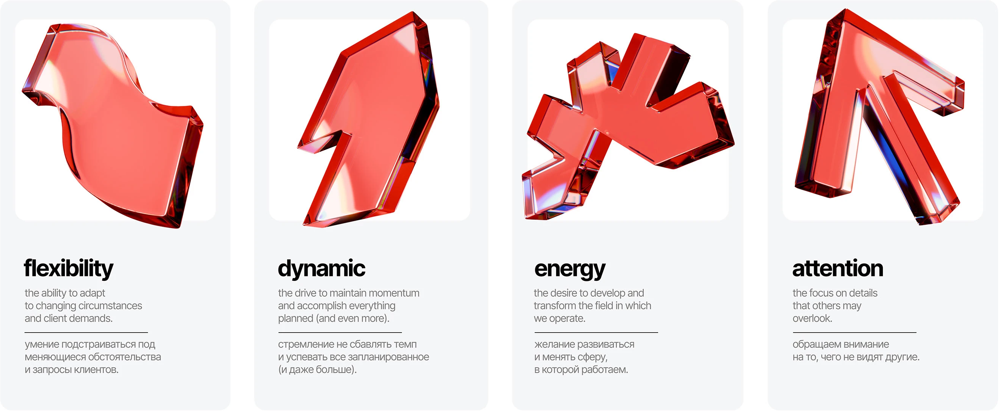
бренда
Фигуры в бренде служат дополнительной привязкой к ценностям бренда, символизируя динамику, энергию, гибкость и внимательность.
Они играют важную роль как во внутренней, так и во внешней коммуникации, способствуя эффективному донесению смыслов с точки зрения акцентов, пронося и подчёркивания сквозь всю коммуникацию приверженность философии и ценностям.
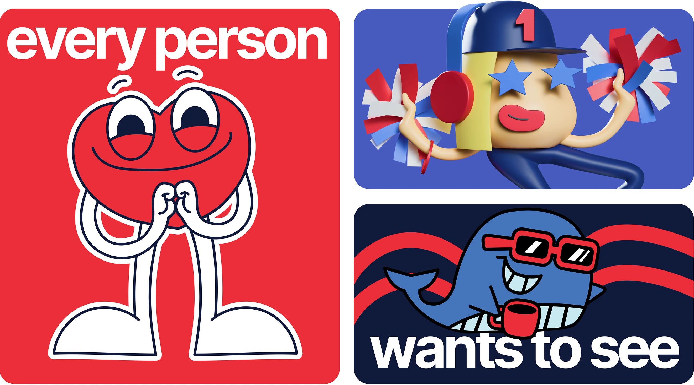
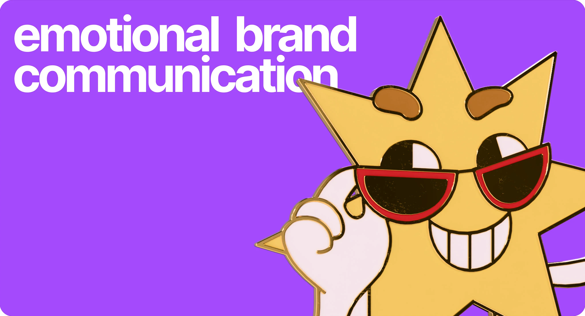
Fam's – это персонажи-помощники бренда, отвечают за прямую и часто утрированную эмоцию, там где она необходима, чтобы бренд-коммуникация не стала слишком строгой и сухой.
Они аккуратно внедрены в качестве стикеров в мессенджерах, в презентациях тестовых заданий для будущих сотрудников, в информационных постах и чатах, а также на сайте агентства в качестве интерактивного элемента *(например, отправки письма или страницы 404).* Главная цель Fam's - вызвать положительные эмоции на конечном этапе коммуникации.
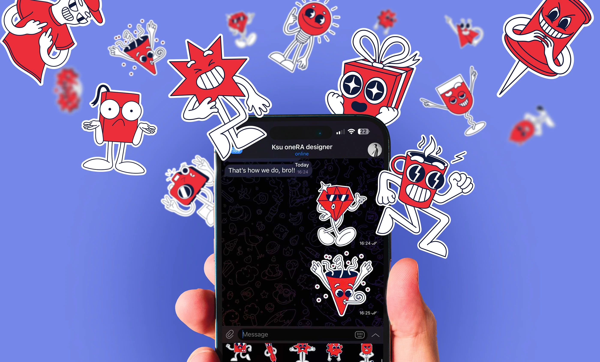
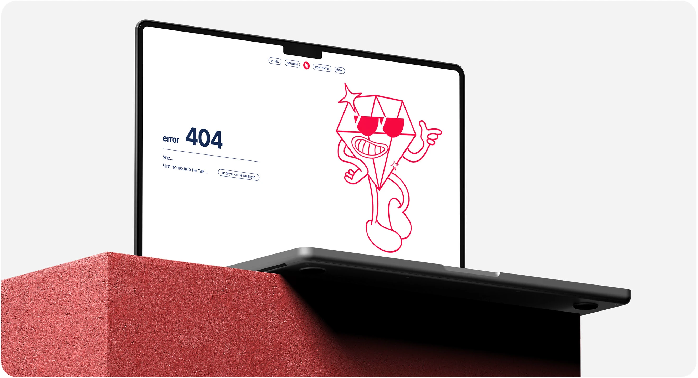
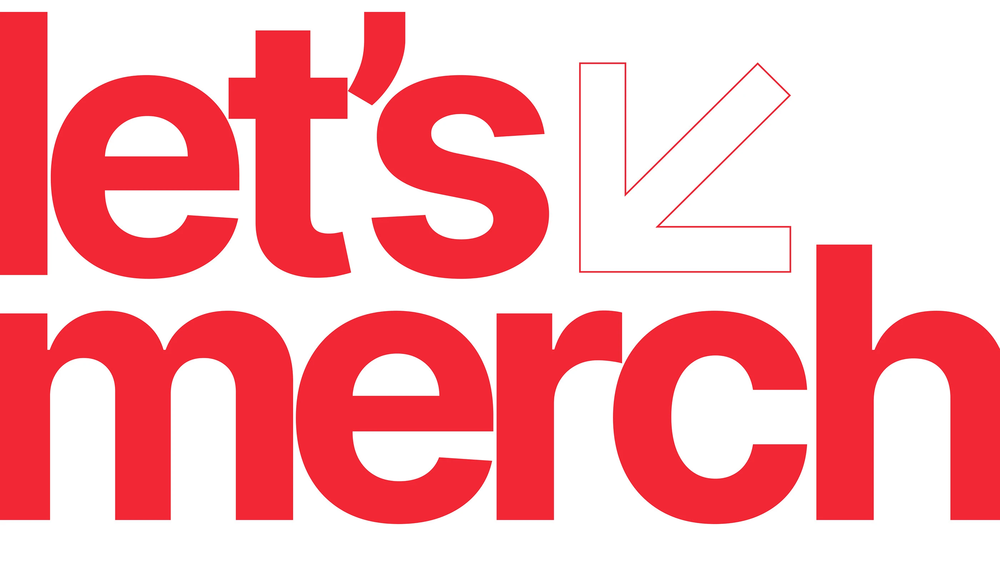
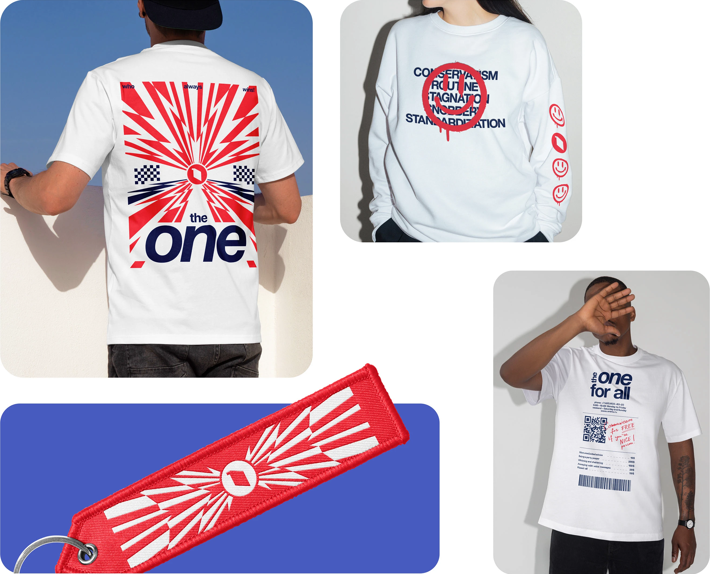
Агентство стремится поддерживать теплые и доверительные отношения со своими клиентами, а потому всегда с удовольствием готовит для них подарки в связи с различными международными праздниками, встречами и конференциями. Компания не ограничивается только дизайном продукции; напротив, она подчеркивает свою способность удовлетворять потребности с помощью универсальных решений, начиная от тщательно подобранных сувенирных наборов с продуманной концепцией и заканчивая разработкой уникальных продуктов, где качество стоит на первом месте, и все это направлено на то, чтобы обеспечить незабываемые впечатления.
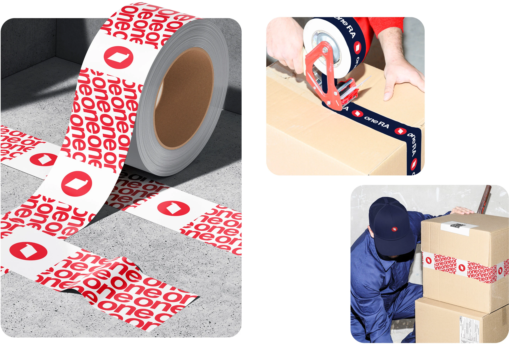
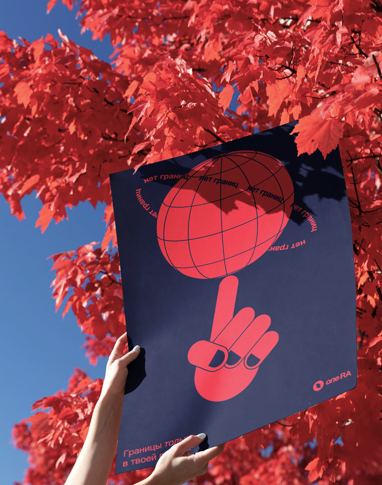
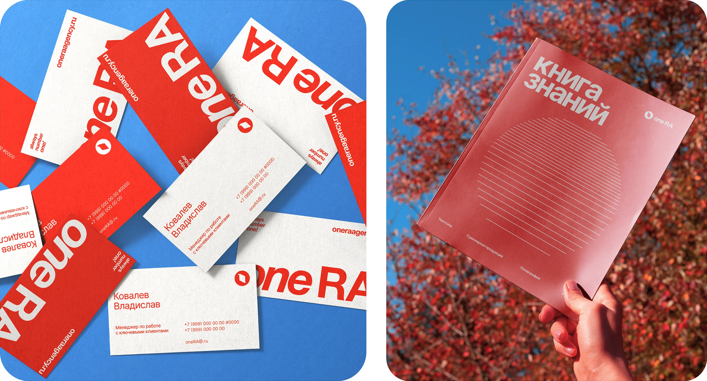
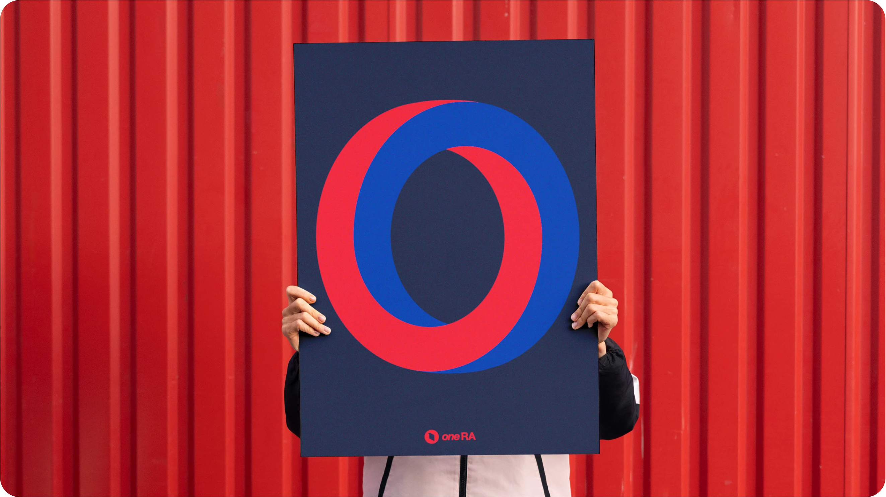
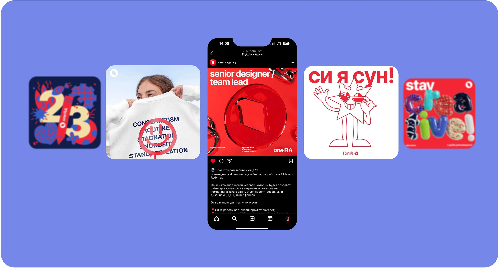
для бизнеса
- формирование современного и более выразительного образа агентства
- усиление узнаваемости бренда и повышение привлекательности компании для клиентов и потенциальных сотрудников
- укрепление корпоративной культуры и вовлеченности команды
- создание единой системы коммуникации для внутренних и внешних носителей
- упрощение масштабирования бренда за счет гибкой визуальной системы
- повышение целостности и последовательности коммуникации на всех точках контакта
- развитие нового направления бизнеса: дизайн был выделен в отдельную услугу агентства
- повышение маржинальности компании за счет расширения спектра услуг и увеличения доли дизайн-проектов
- сокращение времени на подготовку внутренних коммуникационных материалов благодаря системе шаблонов
- снижение нагрузки на дизайнеров: часть материалов менеджеры могли самостоятельно создавать и адаптировать без привлечения дизайн-команды.
Работала в составе небольшой команды под руководством арт-директора.
Отвечала за развитие визуальной системы бренда:
- разрабатывала коммуникационные материалы
- создавала иллюстрации и персонажей
- проектировала внутренние шаблоны и мерч
- участвовала в развитии единого визуального языка бренда
ПОСМОТРЕТЬ ВЕСЬ ПРОЕКТ →